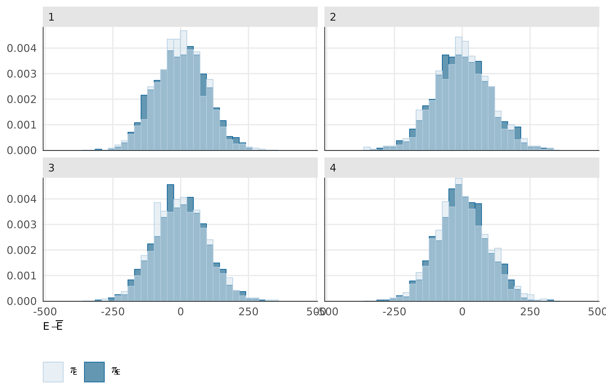
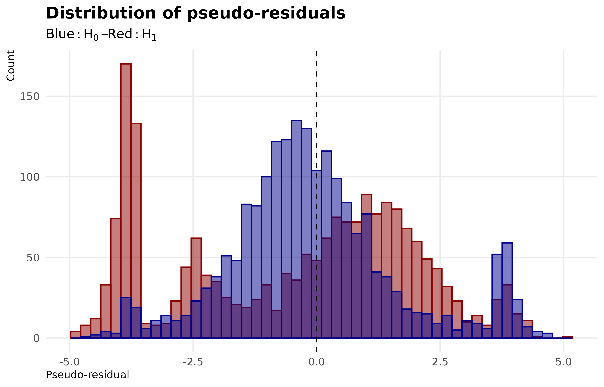

In the model \(H0\), we infered 1 parameter (\(\phi\)). In the model \(H_1\) We estimated the 9,679 parameters with a Bayesian inference method using the Stan language Carpenter et al. (2017) and the R package cmdstanr Gabry et al. (2025). The posterior distribution evaluation consisted of a preliminary warm-up phase using a Laplace approximation algorithm (10,000 iterations) followed by estimation with a No U-Turn Sampler including 2,000 warm-up iterations and 2,000 sampling iterations.
Figure 2: Traceplots for log posterior and 4 parameters from model H1
These plots show that the chains are stable, well-mixed, and converged.
We performed a NUTS energy diagnostics where we examine the distribution of the sampler’s Hamiltonian “energy” (energy__) across post–warm-up iterations. In Hamiltonian Monte Carlo, the energy reflects the sum of potential energy (linked to the log-posterior) and kinetic energy (from the momentum variables), and its behaviour provides a direct check of whether the sampler is moving efficiently through the posterior. We expect overlapping, unimodal distributions of energy across chains which indicate a consistent exploration of the same posterior geometry.
Code
bayesplot::mcmc_nuts_energy(nuts_params(fitH1)) +theme_public()## `stat_bin()` using `bins = 30`. Pick better value `binwidth`.## `stat_bin()` using `bins = 30`. Pick better value `binwidth`.

Figure 3: NUTS energy diagnostics of model H1
Across the four NUTS chains, we observe the expected pattern. The centered, approximately symmetric shapes suggest no strong pathology in energy transitions and no obvious chain-specific deviations. Minor differences in tail mass are limited, supporting stable sampling behaviour across chains.
Posterior predictive adequacy (pseudo-residuals)
We use the pseudo-residual approach implemented in estimate_residuals() following to Gerber & Craig method Gerber and Craig (2024).
Gerber & Craig pseudo-residuals for multinomial count models that are constructed to behave like standard normal residuals when the fitted model is correct. For each observation (count vector) : * (i) generate many replicate count vectors from the fitted multinomial model, * (ii) map observed and simulated compositions to using an additive log-ratio (log-odds) transform, after applying a correction that removes zeros (so log-ratios are defined), * (iii) quantify how unusual the observed log-odds vector is relative to its model-based sampling distribution using a squared Mahalanobis distance (which accounts for covariance among categories), * (iv) convert the observed distance into a randomised percentile under the empirical distance distribution, then apply a probit transform to obtain a single residual per observation.
Under correct specification, these residuals are approximately (and, aside from parameter-estimation uncertainty, conceptually) standard normal, enabling familiar residual-vs-covariate plots to diagnose general lack of fit in multinomial.
Code
tibble(res_H0 = Y_fitted_H0$res, res_H1 = Y_fitted_H1$res) |>ggplot() +geom_histogram(aes(x = res_H0), fill ="darkred", color ="darkred", bins =50, alpha =0.5) +geom_histogram(aes(x = res_H1), fill ="darkblue", color ="darkblue", bins =50, alpha =0.5) +geom_vline(xintercept =0, linetype ="dashed") +labs(x ="Pseudo-residual", y ="Count", title ="Distribution of pseudo-residuals", subtitle =expression(Blue: H[0]- Red: H[1]))+theme_public()

Figure 4: Distribution of pseudo-residuals for H0 and H1
Analysis of the pseudo-residuals Figure 4 shows an unbiased zero-centred distribution for model \(H_1\) whereas the model \(H_0\) present a severelly biaised distribution.
Figure 5: Distribution of residuals across environmental predictors from model H1
Analysis of the pseudo-residuals Figure 5 shows an unbiased zero-centred distribution for quantitative variables \(Clim_1\), \(Clim_2\) and \(SWI\) in validation dataset.
Predictive performance
We quantify predictive improvement relative to a null model using the pseudo-residual approach, and report a McFadden pseudo-R² : \(\rho^{2} = 1-\dfrac{\log(\mathcal{L}(H_1))}{\log(\mathcal{L}(H_0))}\)
Pseudo-R² MacFadden of model H1 in train and validation datasets
Dataset
50%
2.5%
97.5%
Train
20.86
20.80
20.91
Validation
19.26
19.07
19.44
We found a median \(\rho^{2} \sim 20 \%\) which indicate a pretty good adjustement for a multinomial model (Domencich and McFadden 1975).
References
Carpenter, Bob, Andrew Gelman, Matthew D. Hoffman, Daniel Lee, Ben Goodrich, Michael Betancourt, Marcus Brubaker, Jiqiang Guo, Peter Li, and Allen Riddell. 2017. “Stan: A Probabilistic Programming Language.”Journal of Statistical Software 76 (January): 1–32. https://doi.org/10.18637/jss.v076.i01.
Domencich, Thomas A., and Daniel McFadden. 1975. Urban Travel Demand: A Behavioral Analysis: A Charles River Associates Research Study. Contributions to Economic Analysis 93. Amsterdam : New York: North-Holland Pub. Co. ; American Elsevier.
Gabry, Jonah, Rok Češnovar, Andrew Johnson, and Steve Bronder. 2025. “Cmdstanr: R Interface to ’CmdStan’.”
Gerber, Eric A. E., and Bruce A. Craig. 2024. “Residuals and Diagnostics for Multinomial Regression Models.”Statistical Analysis and Data Mining: The ASA Data Science Journal 17 (1): e11645. https://doi.org/10.1002/sam.11645.
Source Code
---title: "Model diagnostics"format: html: code-fold: true---```{r libraries-data, warning=FALSE, message=FALSE, include=FALSE}library(tidyverse)library(rstan)library(brms)library(gt)library(gtExtras)here_rel <- function(...) { fs::path_rel(here::here(...))}source(here_rel("R", "funs_graphics.R"))source(here_rel("R", "funs_plot_tables.R"))source(here_rel("R", "funs_model.R"))theme_set(theme_public())```# Model fittingIn the model $H0$, we infered 1 parameter ($\phi$).In the model $H_1$ We estimated the 9,679 parameters with a Bayesian inference method using the Stan language @carpenterStanProbabilisticProgramming2017 and the R package cmdstanr @gabryCmdstanrInterfaceCmdStan2025. The posterior distribution evaluation consisted of a preliminary warm-up phase using a Laplace approximation algorithm (10,000 iterations) followed by estimation with a No U-Turn Sampler including 2,000 warm-up iterations and 2,000 sampling iterations.```{r}path_fitH0 <-here_rel("results", "models", "H0")fitH0_chains <- brms::read_csv_as_stanfit(paste0( path_fitH0, "/",list.files(path_fitH0, "*.csv")))fitH0 <-readRDS(here_rel("results", "models", "H0", "fitH0.rds"))path_fitH1 <-here_rel("results", "models", "H1")fitH1_chains <- brms::read_csv_as_stanfit(paste0( path_fitH1, "/",list.files(path_fitH1, "*.csv")))fitH1 <-readRDS(here_rel("results", "models", "H1", "fitH1.rds"))```# Model diagnostics## ConvergenceConvergence was verified using the $\hat R$ statistic.```{r}#| label: fig-rhat#| fig-align: center#| fig-cap: "Distribution of convergence metrics (R hat) for model H1"if (!file.exists(here_rel("notebook", "figs","rhat_H1.png"))) {if (file.exists(here_rel("results", "models", "H1", "Summary_H1.rds"))) { RhatH1 <-readRDS(here_rel("results", "models", "H1", "Summary_H1.rds"))$rhat } else { summaryH1 <- fitH1$summary()saveRDS(summaryH1,here_rel("results", "models", "H1", "Summary_H1.rds")) RhatH1 <- summaryH1$rhatnames(RhatH1) <- summaryH1$variable } g <- RhatH1 |>as_tibble() |>mutate(par =names(RhatH1)) |>rename(rhat = value) |>ggplot(aes(x = rhat)) +geom_density() +theme_public() +ggtitle("9679 parameters", "0 with rhat > 1.01")ggsave(plot = g, filename =here_rel("notebook", "figs","rhat_H1.png"), bg ="white", width =5,height =5)} knitr::include_graphics(here_rel("notebook", "figs","rhat_H1.png"))```The model correctly converged (all $\hat R < 1.01$) for all parameters. For the sake of illustration, we show just five parameters including log-posterior `lp__` and 5 paramaters selected at random.```{r}#| label: fig-traceplot#| fig-align: center#| fig-cap: "Traceplots for log posterior and 4 parameters from model H1"plot_trace( fitH1,c("lp__", sample(variables(fitH1), 5)))```These plots show that the chains are stable, well-mixed, and converged.We performed a NUTS energy diagnostics where we examine the distribution of the sampler’s Hamiltonian “energy” (energy__) across post–warm-up iterations.In Hamiltonian Monte Carlo, the energy reflects the sum of potential energy (linked to the log-posterior) and kinetic energy (from the momentum variables), and its behaviour provides a direct check of whether the sampler is moving efficiently through the posterior.We expect overlapping, unimodal distributions of energy across chains which indicate a consistent exploration of the same posterior geometry.```{r}#| label: fig-NUTS-energy#| fig-align: center#| fig-cap: "NUTS energy diagnostics of model H1"bayesplot::mcmc_nuts_energy(nuts_params(fitH1)) +theme_public()```Across the four NUTS chains, we observe the expected pattern. The centered, approximately symmetric shapes suggest no strong pathology in energy transitions and no obvious chain-specific deviations. Minor differences in tail mass are limited, supporting stable sampling behaviour across chains.## Posterior predictive adequacy (pseudo-residuals)We use the pseudo-residual approach implemented in `estimate_residuals()` following to Gerber & Craig method @gerberResidualsDiagnosticsMultinomial2024.```{r}if (!all(file.exists(here_rel("results", "models", "H0", "Y_H0_fitted.rds"),here_rel("results", "models", "H1", "Y_H1_fitted.rds")))) {if (!file.exists(here_rel("data", "raw_data", "Y_raw.rds"))) {stop(paste0("missing ", here_rel("data", "raw_data", "Y_raw.rds"))) } else { Y_raw <-readRDS(here_rel("data", "raw_data", "Y_raw.rds")) Y_fitted_H0 <-estimate_residuals(fitH0, Y_raw |>filter(type =="train"), Y_raw |>filter(type =="validation"),chunk_size =100, ncores =1 )saveRDS(Y_fitted_H0, here_rel("results", "models", "H0", "Y_H0_fitted.rds")) Y_fitted_H1 <-estimate_residuals(fitH1, Y_raw |>filter(type =="train"), Y_raw |>filter(type =="validation"),chunk_size =100, ncores =1 )saveRDS(Y_fitted_H1, here_rel("results", "models", "H1", "Y_H1_fitted.rds")) }}Y_fitted_H0 <-readRDS(here_rel("results", "models", "H0", "Y_H0_fitted.rds"))Y_fitted_H1 <-readRDS(here_rel("results", "models", "H1", "Y_H1_fitted.rds"))```Gerber & Craig pseudo-residuals for multinomial count models that are constructed to behave like standard normal residuals when the fitted model is correct. For each observation (count vector) : * (i) generate many replicate count vectors from the fitted multinomial model, * (ii) map observed and simulated compositions to using an additive log-ratio (log-odds) transform, after applying a correction that removes zeros (so log-ratios are defined), * (iii) quantify how unusual the observed log-odds vector is relative to its model-based sampling distribution using a squared Mahalanobis distance (which accounts for covariance among categories), * (iv) convert the observed distance into a randomised percentile under the empirical distance distribution, then apply a probit transform to obtain a single residual per observation.Under correct specification, these residuals are approximately (and, aside from parameter-estimation uncertainty, conceptually) standard normal, enabling familiar residual-vs-covariate plots to diagnose general lack of fit in multinomial.```{r}#| label: fig-res_dist#| fig-align: center#| fig-cap: "Distribution of pseudo-residuals for H0 and H1"tibble(res_H0 = Y_fitted_H0$res, res_H1 = Y_fitted_H1$res) |>ggplot() +geom_histogram(aes(x = res_H0), fill ="darkred", color ="darkred", bins =50, alpha =0.5) +geom_histogram(aes(x = res_H1), fill ="darkblue", color ="darkblue", bins =50, alpha =0.5) +geom_vline(xintercept =0, linetype ="dashed") +labs(x ="Pseudo-residual", y ="Count", title ="Distribution of pseudo-residuals", subtitle =expression(Blue: H[0]- Red: H[1]))+theme_public()```Analysis of the pseudo-residuals @fig-res_dist shows an unbiased zero-centred distribution for model $H_1$ whereas the model $H_0$ present a severelly biaised distribution.```{r}#| label: fig-res_env#| fig-align: center#| fig-cap: "Distribution of residuals across environmental predictors from model H1"if (!file.exists(here_rel("notebook", "figs", "fig-res_env.png"))) { p1 <- Y_fitted_H1 |> sf::st_drop_geometry() |>select(type, Clim1, Clim2, GeomSub, SWI, res) |>ggplot(aes(color = type, fill = type, x = Clim1, y = res)) +geom_point(size =0.5) +geom_smooth(method ="lm") +geom_vline(aes(xintercept =mean(Clim1)),linetype ="dashed", color ="black" ) +ylab("Gerber & Craig pseudo-residuals") +scale_color_manual("Split datasets", values =c("train"="darkblue", "validation"="darkred")) +scale_fill_manual("Split datasets", values =c("train"="darkblue", "validation"="darkred")) p2 <- Y_fitted_H1 |> sf::st_drop_geometry() |>select(type, Clim1, Clim2, GeomSub, SWI, res) |>ggplot(aes(color = type, fill = type, x = Clim2, y = res)) +geom_point(size =0.5) +geom_smooth(method ="lm") +geom_vline(aes(xintercept =mean(Clim2)),linetype ="dashed", color ="black" ) +ylab("Gerber & Craig pseudo-residuals") +scale_color_manual("Split datasets", values =c("train"="darkblue", "validation"="darkred")) +scale_fill_manual("Split datasets", values =c("train"="darkblue", "validation"="darkred")) p3 <- Y_fitted_H1 |> sf::st_drop_geometry() |>select(type, Clim1, Clim2, GeomSub, SWI, res) |>ggplot(aes(color = type, fill = type, x =log(SWI +1), y = res)) +geom_point(size =0.5) +geom_smooth(method ="lm") +geom_vline(aes(xintercept =mean(log(SWI +1))),linetype ="dashed", color ="black" ) +ylab("Gerber & Craig pseudo-residuals") +xlab(expression(log(SWI +1))) +scale_color_manual("Split datasets", values =c("train"="darkblue", "validation"="darkred")) +scale_fill_manual("Split datasets", values =c("train"="darkblue", "validation"="darkred")) g <- patchwork::wrap_plots(p1 | p2, p3, ncol =1) + patchwork::plot_layout(guides ="collect") &theme(legend.position ="bottom")ggsave(plot = g, filename =here_rel("notebook", "figs", "fig-res_env.png"), bg ="white", width =7, height =10)}knitr::include_graphics(here_rel("notebook", "figs", "fig-res_env.png"))```Analysis of the pseudo-residuals @fig-res_env shows an unbiased zero-centred distribution for quantitative variables $Clim_1$, $Clim_2$ and $SWI$ in validation dataset.## Predictive performanceWe quantify predictive improvement relative to a null model using the pseudo-residual approach, and report a McFadden pseudo-R² : $\rho^{2} = 1-\dfrac{\log(\mathcal{L}(H_1))}{\log(\mathcal{L}(H_0))}$```{r}#| tbl-align: center#| tbl-cap: "Pseudo-R² MacFadden of model H1 in train and validation datasets"if (!all(file.exists(c(here_rel("results", "models", "H0", "LL_H0.rds"),here_rel("results", "models", "H1", "LL_H1.rds")))) ) {if (!file.exists(here_rel("data", "raw_data", "Y_raw.rds"))) {stop(paste0("missing ", here_rel("data", "raw_data", "Y_raw.rds"))) } else { Y_raw <-readRDS(here_rel("data", "raw_data", "Y_raw.rds")) Y_train <- Y_raw |>filter(type =="train") Y_val <- Y_raw |>filter(type =="validation") fitH0$data$y <- fitH1$data$y <- Y_train$y LL_H0 <-estimate_LL(fit = fitH0,Y_train = Y_train,Y_val = Y_val,chunk_size =100, ncores =1 ) LL_H1 <-estimate_LL(fit = fitH1,Y_train = Y_train,Y_val = Y_val,chunk_size =100, ncores =1 )saveRDS(LL_H0, here_rel("results", "models", "H0", "LL_H0.rds"))saveRDS(LL_H1, here_rel("results", "models", "H1", "LL_H1.rds")) }}LL_H0 <-readRDS(here_rel("results", "models", "H0", "LL_H0.rds"))LL_H1 <-readRDS(here_rel("results", "models", "H1", "LL_H1.rds"))rho_train <-100*quantile(1- (rowSums(t(LL_H1$LL_train_pw)) /rowSums(t(LL_H0$LL_train_pw))), c(0.5, 0.025, 0.975))rho_val <-100*quantile(1- (rowSums(t(LL_H1$LL_val_pw)) /rowSums(t(LL_H0$LL_val_pw))), c(0.5, 0.025, 0.975))rbind(rho_train, rho_val) |>as_tibble() |>mutate(Dataset =c("Train", "Validation")) |>select("Dataset", `50%`, `2.5%`, `97.5%`) |>gt() |>fmt_number(columns =c(`50%`, `2.5%`, `97.5%`), decimals =2) |>opts_theme()```We found a median $\rho^{2} \sim 20 \%$ which indicate a pretty good adjustement for a multinomial model [@domencichUrbanTravelDemand1975].